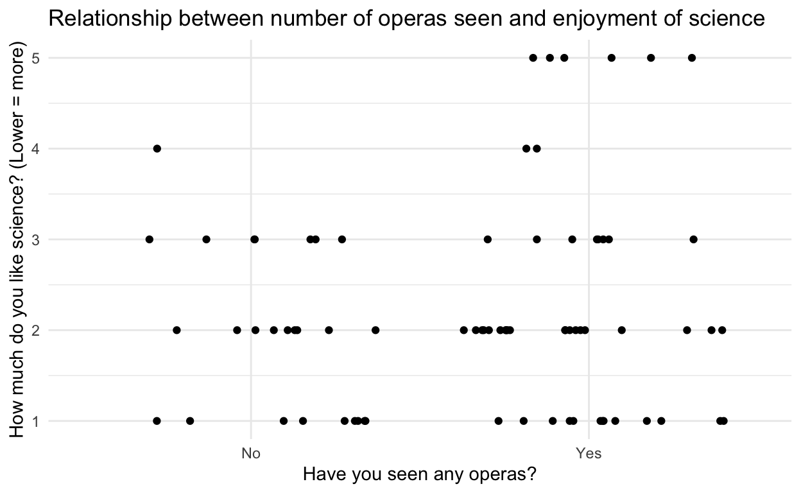

Completed exercises for the seventh lab
This document is meant to be used to practice after you have completed the tutorial for today’s lab. Make sure to put your name as the author of the document, above!
If you intend to work on these exercises while referring to the tutorial, there are instructions on the wiki on how to do so. You may also want to refer to past labs. Don’t forget that previous labs are linked to on the main labs website.
Important reminder: as with every time you open RStudio, don’t forget to load the libraries, below.
In the tutorial, you learned about the function pivot_longer(), which comes from the {tidyr} package (for “tidying” data). You also got to learn about running t-tests with the t.test() function, and practice using {ggplot2} functions to plot them. The exercise will let you work this out.
This week, you must turn the completed version of this document in on Brightspace. I will provide feedback. As always, a version of these exercises with my answers will be posted at the end of the week to the lab website: https://faculty.bard.edu/~jdainerbest/psy-203/labslist.html (likely on Monday morning, 10/19).
I encourage you to do two things as you work through this document: (1) Save it frequently! Hit the disk image above to save, hit Command/Ctrl and s, or go to the File menu and click save. When the document is saved, the title of it will go from red to black. (2) Practice Knitting the document by hitting the Knit button. You can do it now—it’ll create an HTML file in the folder where this file lives. Knitting will both help to identify problems and provide a complete document for me to review.
As always, you must load packages if you intend to use their functions. (“Turn on the lights.”) Run the following code chunk to load necessary packages for these exercises.
library(tidyverse)
# tidyverse loads these that we'll use today:
# library(readr)
# library(dplyr)
# library(ggplot2)
# library(tidyr)You downloaded the fisher.csv data when you downloaded this file; it’s in a folder called /data. Import it below; you probably want to use the read_csv() function from the {readr} package, which was loaded in the {tidyverse}. I’d name the imported file fisher like it was in the tutorial.
You also re-downloaded the friends.csv data. Import that, too.
Remember that both of these are in a folder called “/data”, so your import line might look like read_csv("data/friends.csv")—make sure to have the code importing both data in the code chunk below if you want the document to knit.
fisher <- read_csv("data/fisher.csv")
friends <- read_csv("data/friends.csv")You have two tasks today. You should create your own code chunks (how?: instructions here) and insert all code into them.
Task 1: following the same procedures as in the tutorial, test whether anxiety scores in the fisher dataset (hars.pre and hars.post) reduced from pre-test to post-treatment. Include a t.test() with outcomes, a plot demonstrating the results (label all axes and give it a title!), and a brief write-up describing the results including means and the results of the t-test. (You do not need to go through the steps of calculating all components—you can just use the t.test() function—but you should plan to go through the steps of hypothesis-testing.)
Because this is a dependent-samples t-test, the comparison distribution is the t distribution. The degrees of freedom will be equal to \(n-1\), the mean will be 0, and the \(S_M\) will be the standard deviation of the difference distribution.
Therefore, \(df=31\), \(\mu_M=0\), and \(S_M\) is the SEM.
We’ll integrate the last three steps into the running of the t-test:
t.test(fisher$hars.pre, fisher$hars.post, paired=TRUE)
Paired t-test
data: fisher$hars.pre and fisher$hars.post
t = 8.2142, df = 31, p-value = 2.81e-09
alternative hypothesis: true difference in means is not equal to 0
95 percent confidence interval:
6.929815 11.507685
sample estimates:
mean of the differences
9.21875 Yes, there is a significant difference—a reduction in anxiety scores, such that participants had a mean score of \(M=15.80\) before treatment and \(M=6.59\) after treatment; there is a statistically significant result to a dependent means t-test, \(t(31)=8.21, p < .05\).
Two plots to show this:
ggplot(fisher, aes(x = hars.pre, y = hars.post)) +
geom_point() +
theme_minimal() +
labs(x = "Pre-treatment scores", y = "Post-treatment scores",
title = "HARS scores before and after treatment")With means:
fisher.long <- fisher %>%
pivot_longer(c(hars.pre, hars.post), names_to = "time", values_to = "hars")
# use factor() to rename "hars.pre" and "hars.post" in the time column
fisher.long <- fisher.long %>%
mutate(time = factor(time,
levels = c("hars.pre", "hars.post"),
labels = c("Pre-Treatment", "Post-Treatment")))
hars.means <- fisher.long %>%
group_by(time) %>%
summarize(hars.mean = mean(hars),
hars.sd = sd(hars),
n = n(),
sem = hars.sd / sqrt(n),
.groups = "drop_last")
ggplot(hars.means, aes(x = time, y = hars.mean)) +
geom_col(color = "orange") +
geom_errorbar(aes(ymin = hars.mean - sem, ymax = hars.mean + sem),
width = .3) +
theme_minimal() +
labs(x = "Time", y = "HARS score", title = "HARS scores before and after treatment")We could, alternatively, plot the points with geom_point() and geom_line() to connect them, with the longform data—we’ll add a group = id into the aes() to make sure the lines are per-person.
ggplot(fisher.long, aes(x = time, y = hars, group = id)) +
geom_point(alpha = .7) +
geom_line(alpha = .7) +
theme_minimal() +
labs(x = "Time", y = "HARS score", title = "HARS scores before and after treatment")Task 2: with the friends data, do the following:
operas (“How many operas have you seen in your life? (Approximately is fine.)”) and like.science (“On a scale of 1 (not at all) to 7 (very much), how much do you like science?”)
friends <- friends %>%
filter(! is.na(operas), ! is.na(like.science))ifelse() function we’ve used a few times (remember: ifelse(condition, "if true", "if false")), create a new column in friends called operaYN that simplifies this into a binary “yes I’ve seen an opera” or “no I haven’t”: operaYN = ifelse(operas > 0, "Yes", "No"). Make sure to save it to the data frame. Up to you if you use mutate()—message me or a classmate if you’re unsure on this one (feel free to use the Slack channel), but do figure it out.
friends <- friends %>%
mutate(operaYN = ifelse(operas > 0, "Yes", "No"))
t.test(friends$like.science ~ friends$operaYN)
Welch Two Sample t-test
data: friends$like.science by friends$operaYN
t = -1.3762, df = 67.024, p-value = 0.1733
alternative hypothesis: true difference in means is not equal to 0
95 percent confidence interval:
-0.8501146 0.1562370
sample estimates:
mean in group No mean in group Yes
2.000000 2.346939 There is no statistically-significant difference between groups. Individuals who have not seen operas (\(M=2\)) don’t like science more or less than those have seen operas (\(M=2.34\)), \(t(67.0)=-1.38, p=.17\).
ggplot(friends, aes(x = operaYN, y = like.science)) +
geom_jitter(height = 0) +
theme_minimal() +
labs(x = "Have you seen any operas?", y = "How much do you like science? (Lower = more)",
title = "Relationship between number of operas seen and enjoyment of science")
Or, with means:
science.means <- friends %>%
group_by(operaYN) %>%
summarize(science.mean = mean(like.science),
science.sd = sd(like.science),
n = n(),
sem = science.sd / sqrt(n),
.groups = "drop_last")
ggplot(science.means, aes(x = operaYN, y = science.mean)) +
geom_col(color = "orange") +
geom_errorbar(aes(ymin = science.mean - sem, ymax = science.mean + sem),
width = .3) +
theme_minimal() +
labs(x = "Have you seen any operas?", y = "How much do you like science? (Lower = more)", title = "Relationship between number of operas seen and enjoyment of science")